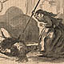

Women Out West & In Texts, 1861 - 1873
SOME FACTS
OTHER ACCOUNTS
MT's ACCOUNT
Taylor:
At Home and Abroad
(1862)
Morgan:
Thrilling Adventures
(1866)
Richardson:
Beyond the Mississippi
(1867)
Browne:
Adventures in the Apache Country
(1868)
Logan: Does Visiting Yosemite Pay?
(1870)
Sweet Betsy From Pike
(c. 1870)
Webb:
Buffalo Land
(1872)
Crofut's Tourists's Guide
(1872)
Greenwood:
New Life in New Lands
(1873)
Beadle:
The Undeveloped West
(1873)
CHAPTER 57
-- "that rare and blessed spectacle"
SELECTED ILLUSTRATIONS
